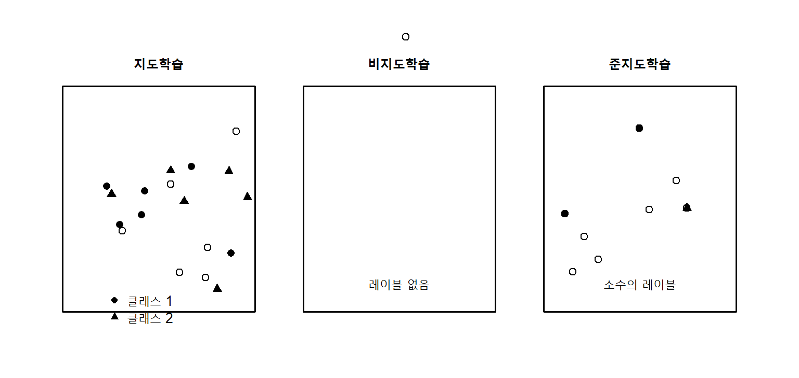
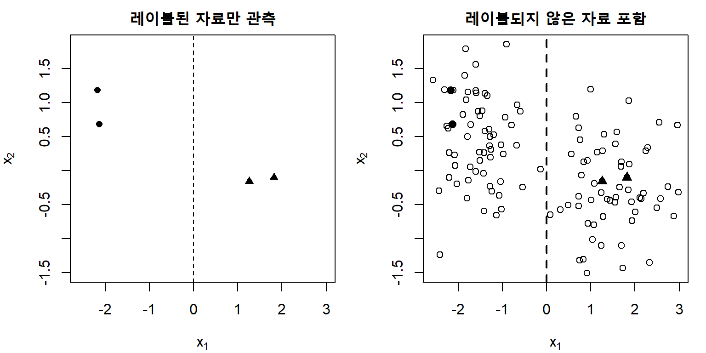
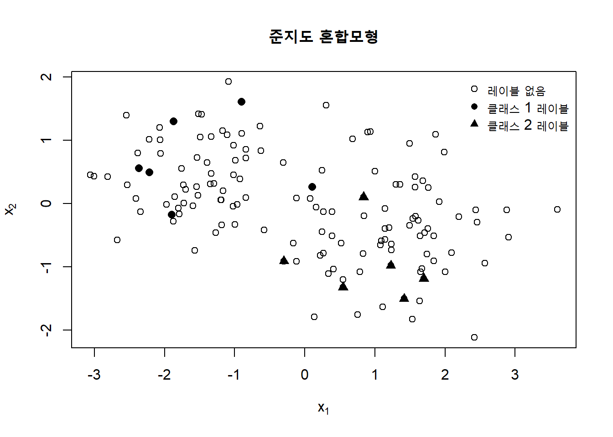
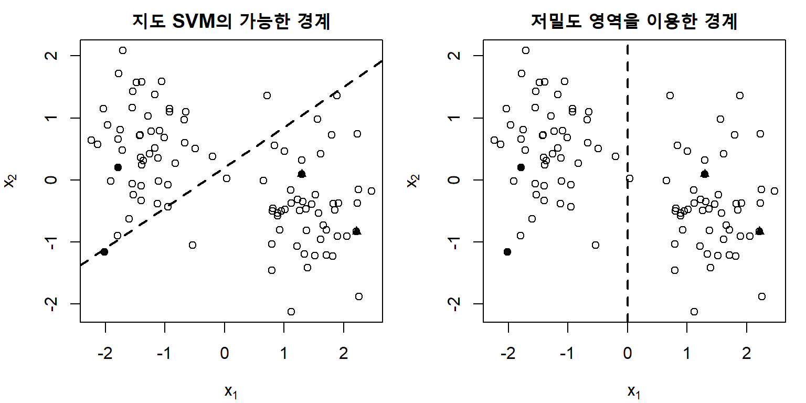
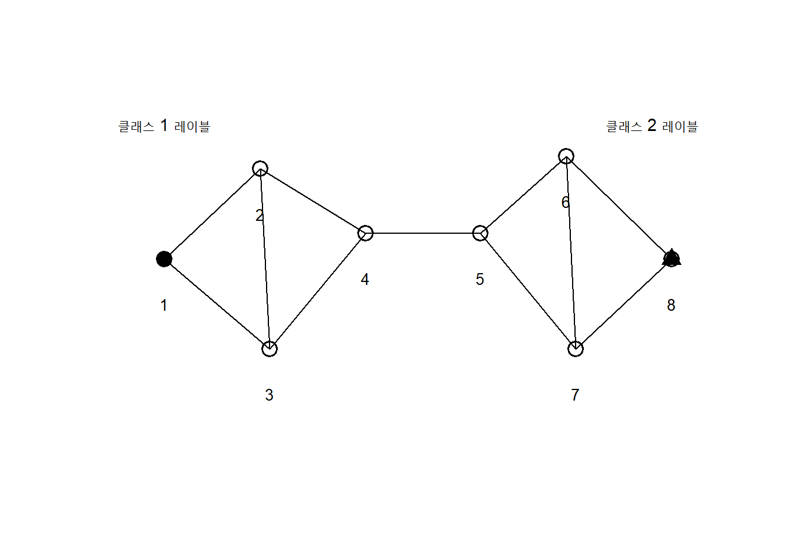
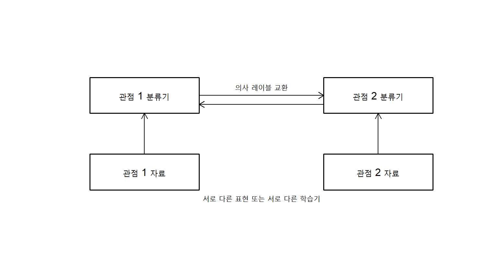
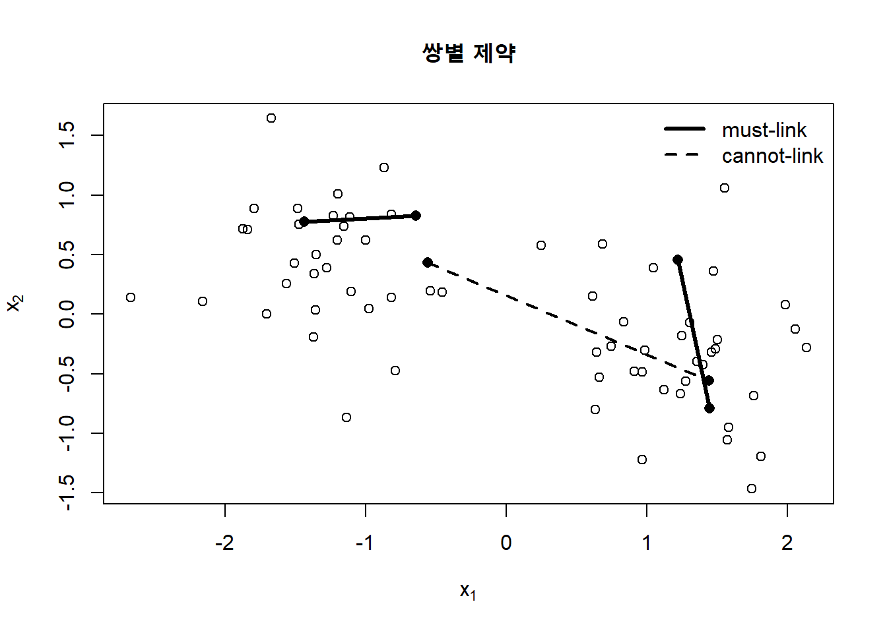
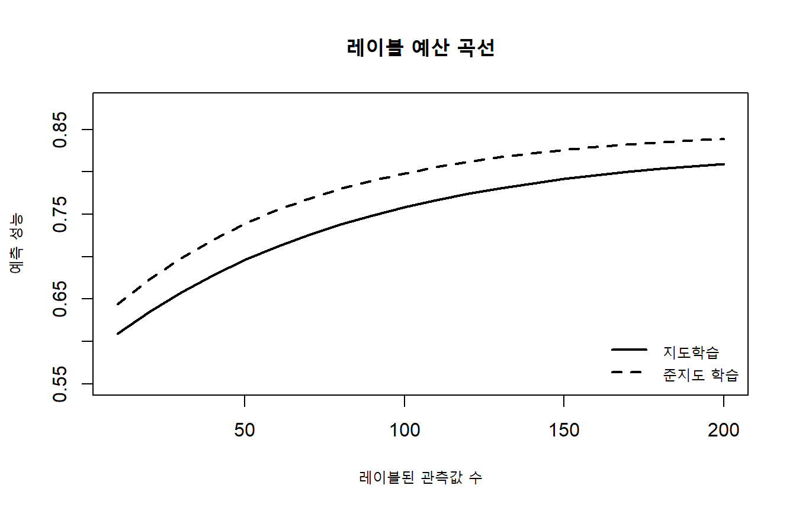

13 준지도 학습
머신러닝에서는 충분한 양의 입력자료를 수집하는 일보다 각 관측값에 정확한 레이블을 부여하는 일이 더 어렵고 비용이 많이 드는 경우가 많다. 의료영상은 전문의의 판독이 필요하고, 문서 분류는 사람이 문맥을 읽어야 하며, 음성자료는 긴 발화를 직접 전사해야 한다. 반면 레이블이 없는 영상, 문서, 음성자료는 비교적 쉽게 확보할 수 있다. 준지도 학습(semi-supervised learning)은 소수의 레이블된 자료와 다수의 레이블되지 않은 자료를 함께 이용하여 예측함수를 학습하는 방법이다.
레이블된 자료를
\[ \mathcal D_L = \{(\mathbf x_i,y_i)\}_{i=1}^{n_L}, \tag{13.1}\]
레이블되지 않은 자료를
\[ \mathcal D_U = \{\mathbf x_j\}_{j=n_L+1}^{n_L+n_U} \tag{13.2}\]
라고 하자. 일반적으로 준지도 학습에서는
\[ n_U \gg n_L \]
인 상황을 가정한다. 전체 입력자료는
\[ \mathcal X_{L+U} = \{\mathbf x_i\}_{i=1}^{n_L+n_U} \]
로 나타낼 수 있다. 핵심 질문은 다음과 같다.
목표값을 관측하지 않은 입력자료가 어떻게 분류 또는 회귀 성능을 향상시킬 수 있는가?
레이블되지 않은 자료는 입력분포 \(p(\mathbf x)\)에 대한 정보를 제공한다. 그러나 우리가 예측하려는 것은 보통 조건부분포 \(p(y\mid\mathbf x)\)이다. 따라서 \(p(\mathbf x)\)의 구조가 \(p(y\mid\mathbf x)\)와 관련되어 있다는 추가 가정이 있어야 레이블되지 않은 자료가 유용하다. 이 장에서는 이러한 가정을 먼저 설명한 뒤, 생성적 방법, 준지도 서포트 벡터 머신, 그래프 기반 방법, 불일치에 기반한 방법과 준지도 클러스터링을 차례로 다룬다.
그림 13.1는 세 학습 설정의 차이를 보여준다. 지도학습은 모든 훈련관측값에 레이블이 있다고 가정하고, 비지도학습은 레이블 없이 입력자료의 구조를 탐색한다. 준지도 학습은 이 두 상황의 중간에 위치한다.
13.1 레이블되지 않은 데이터
13.1.1 준지도 학습 문제의 형식화
분류 문제에서 입력공간을 \(\mathcal X\), 클래스 집합을
\[ \mathcal Y=\{1,\ldots,K\} \]
라고 하자. 지도학습은 레이블된 자료만 이용하여 다음 경험위험을 최소화한다.
\[ \widehat f_{ \mathrm{sup}} = \arg\min_{f\in\mathcal H} \frac{1}{n_L} \sum_{i=1}^{n_L} L\{y_i,f(\mathbf x_i)\}. \tag{13.3}\]
준지도 학습은 여기에 레이블되지 않은 자료에서 얻은 구조적 정보를 추가한다.
\[ \widehat f_{ \mathrm{semi}} = \arg\min_{f\in\mathcal H} \left[ \frac{1}{n_L} \sum_{i=1}^{n_L} L\{y_i,f(\mathbf x_i)\} + \lambda \Omega_U \{f;\mathcal D_U\} \right]. \tag{13.4}\]
여기서 \(\Omega_U\)는 레이블되지 않은 자료를 이용하여 정의한 규제항이다. 방법에 따라 \(\Omega_U\)는 다음과 같이 달라진다.
- 생성모형에서는 입력분포의 로그우도
- 준지도 SVM에서는 저밀도 영역을 통과하도록 유도하는 마진 규제
- 그래프 기반 학습에서는 인접한 관측값의 예측값 차이에 대한 벌점
- 일관성 규제에서는 입력의 작은 변형 전후 예측값 차이에 대한 벌점
따라서 준지도 학습은 단일 알고리즘이 아니라, 레이블되지 않은 자료에서 어떤 구조를 추출하고 이를 어떤 방식으로 예측함수에 반영하는가에 따라 구분되는 방법론의 집합이다.
13.1.2 귀납적 학습과 변환적 학습
준지도 학습은 예측 대상에 따라 귀납적 학습(inductive learning)과 변환적 학습(transductive learning)으로 구분할 수 있다.
귀납적 학습은 새로운 입력 \(\mathbf x_{\mathrm{new}}\)에 적용할 수 있는 함수 \(f\)를 학습한다.
\[ \widehat y_{\mathrm{new}} = \widehat f(\mathbf x_{\mathrm{new}}). \]
반면 변환적 학습은 현재 주어진 레이블되지 않은 집합 \(\mathcal D_U\)의 레이블을 직접 추정하는 데 초점을 둔다.
\[ \{\widehat y_j: \mathbf x_j\in\mathcal D_U\}. \]
그래프 기반 레이블 전파(label propagation)와 변환적 SVM(transductive SVM)은 대표적인 변환적 방법이다. 변환적 방법은 평가 대상의 입력자료를 학습과정에서 이용하기 때문에, 일반적인 귀납적 모형과 평가방식이 다르다. 새로운 자료가 계속 유입되는 응용에서는 귀납적 방법이 편리하지만, 고정된 데이터베이스 전체를 분류하는 문제에서는 변환적 방법이 효과적일 수 있다.
13.1.3 레이블되지 않은 자료가 주는 정보
레이블된 자료는 결합분포 \(p(\mathbf x,y)\)에 대한 직접적인 정보를 제공한다. 레이블되지 않은 자료는 주변분포
\[ p(\mathbf x) = \sum_{y=1}^{K} p(\mathbf x,y) \]
에 대한 정보를 제공한다. 생성모형에서는
\[ p(y\mid\mathbf x) = \frac{p(\mathbf x\mid y)p(y)}{p(\mathbf x)} \]
이므로 \(p(\mathbf x)\)의 구조가 분류에 직접 연결된다. 그러나 판별모형에서는 \(p(y\mid\mathbf x)\)를 직접 추정하므로 \(p(\mathbf x)\)를 많이 관측하더라도 조건부분포에 대한 정보가 자동으로 증가하지 않는다.
레이블되지 않은 자료가 도움이 되려면 입력분포와 조건부분포 사이에 일정한 구조적 관계가 있어야 한다. 준지도 학습에서 자주 사용되는 가정은 다음 세 가지이다.
13.1.4 매끄러움 가정
매끄러움 가정(smoothness assumption)은 서로 가까운 두 입력이 비슷한 목표값을 가질 가능성이 높다고 가정한다.
\[ \|\mathbf x_i-\mathbf x_j\|\text{가 작으면} \quad f(\mathbf x_i)\approx f(\mathbf x_j). \tag{13.5}\]
이 가정은 k-최근접 이웃, 커널 방법과 그래프 기반 학습의 기초가 된다. 다만 원자료 공간에서의 유클리드 거리가 의미 있는 유사성을 나타내지 못하면 매끄러움 가정은 부적절할 수 있다. 예를 들어 고차원 영상자료에서는 픽셀 거리보다 학습된 표현공간의 거리가 더 의미 있을 수 있다.
13.1.5 군집 가정과 저밀도 분리 가정
군집 가정(cluster assumption)은 동일한 고밀도 영역에 속한 관측값은 같은 클래스를 가질 가능성이 높다고 본다. 이에 대응하는 저밀도 분리 가정(low-density separation assumption)은 좋은 결정경계가 입력자료가 드문 영역을 지나야 한다고 가정한다.
\[ \widehat f \text{의 결정경계는} \quad p(\mathbf x)\text{가 작은 영역을 선호한다.} \tag{13.6}\]
준지도 SVM과 엔트로피 최소화(entropy minimization)는 이 가정을 직접 활용한다. 레이블된 관측값이 매우 적더라도 레이블되지 않은 자료가 두 개의 뚜렷한 군집을 형성하면, 결정경계를 두 군집 사이에 배치할 수 있다.

그림 13.2의 왼쪽 그림에서는 네 개의 레이블만으로 결정경계를 정하기 어렵다. 오른쪽 그림처럼 전체 입력분포를 관찰하면 두 개의 고밀도 영역 사이에 경계를 놓는 것이 자연스럽다.
13.1.6 매니폴드 가정
고차원 자료가 실제로는 저차원 구조 근처에 놓여 있다는 가정을 매니폴드 가정(manifold assumption)이라고 한다. 입력자료가 \(p\)차원 공간에 존재하더라도 본질적인 자유도는 \(d\ll p\)일 수 있다.
\[ \mathbf x_i\in\mathbb R^p, \qquad \mathbf x_i\approx \mathcal M, \qquad \dim(\mathcal M)=d\ll p. \tag{13.7}\]
그래프 라플라시안(graph Laplacian)과 매니폴드 규제(manifold regularization)는 관측값이 놓인 저차원 구조를 근사하고, 이 구조 위에서 예측함수가 매끄럽게 변하도록 한다.
13.1.7 준지도 학습이 실패하는 경우
레이블되지 않은 자료는 항상 성능을 향상시키지 않는다. 다음과 같은 경우에는 오히려 성능이 악화될 수 있다.
- 입력분포의 군집구조와 클래스 구조가 일치하지 않는 경우
- 레이블된 자료와 레이블되지 않은 자료의 분포가 다른 경우
- 초기 모형의 오류를 의사 레이블이 반복적으로 증폭하는 경우
- 클래스 비율이 레이블된 자료와 레이블되지 않은 자료에서 다른 경우
- 거리 또는 그래프가 실제 의미 있는 유사성을 반영하지 못하는 경우
- 레이블 오류가 존재하여 전파되는 경우
이러한 현상을 부정적 전이(negative transfer)라고 볼 수 있다. 준지도 학습에서는 레이블되지 않은 자료를 많이 추가했다는 사실보다, 그 자료가 목표 모집단과 동일한 분포에서 왔는지와 사용한 구조적 가정이 타당한지가 더 중요하다.
13.1.8 평가설계와 데이터 누출
준지도 학습의 평가는 지도학습보다 더 주의해야 한다. 시험자료의 입력값을 그래프 구성이나 표현학습에 포함하면 변환적 설정에서는 허용될 수 있지만, 귀납적 일반화 성능을 평가하려는 경우에는 데이터 누출이 된다.
귀납적 평가에서는 다음 절차를 권장한다.
- 먼저 전체 자료를 훈련집합과 시험집합으로 분할한다.
- 훈련집합 내부에서 레이블된 부분과 레이블되지 않은 부분을 정의한다.
- 준지도 학습의 모든 그래프, 표현, 의사 레이블과 하이퍼파라미터는 훈련집합만으로 생성한다.
- 최종 시험집합은 모형 선택이 끝난 뒤 한 번만 평가한다.
준지도 학습의 효과는 동일한 레이블된 자료를 사용하는 지도학습 기준모형과 비교해야 한다. 레이블되지 않은 자료의 수를 변화시키면서 성능곡선을 제시하면 추가 자료의 한계효과를 확인할 수 있다.
경고주의: 레이블 제거 실험
완전한 레이블 자료에서 일부 레이블을 인위적으로 제거하여 준지도 학습을 평가할 수 있다. 이때 레이블을 완전무작위로 제거하면 실제 레이블 획득과정과 다를 수 있다. 현실에서는 어려운 사례, 특정 기관 또는 특정 하위집단에서 레이블이 더 자주 누락될 수 있으므로 레이블 누락 메커니즘을 함께 고려해야 한다.
13.2 생성적 방법
13.2.1 생성모형의 기본 원리
생성적 준지도 학습(generative semi-supervised learning)은 클래스 사전확률과 클래스 조건부 입력분포를 모형화한다.
\[ p(\mathbf x,y\mid\theta) = p(y\mid\theta)p(\mathbf x\mid y,\theta). \tag{13.8}\]
레이블된 자료의 우도는
\[ L_L(\theta) = \prod_{i=1}^{n_L} p(y_i\mid\theta) p(\mathbf x_i\mid y_i,\theta) \]
이고, 레이블되지 않은 자료의 우도는 가능한 모든 클래스에 대해 합을 취한다.
\[ L_U(\theta) = \prod_{j=n_L+1}^{n_L+n_U} \sum_{k=1}^{K} p(y=k\mid\theta) p(\mathbf x_j\mid y=k,\theta). \]
따라서 전체 로그우도는
\[ \ell(\theta) = \sum_{i=1}^{n_L} \log p(\mathbf x_i,y_i\mid\theta) + \sum_{j=n_L+1}^{n_L+n_U} \log \left[ \sum_{k=1}^{K} p(\mathbf x_j,y=k\mid\theta) \right]. \tag{13.9}\]
레이블되지 않은 자료는 주변분포 \(p(\mathbf x)\)의 모수를 추정하는 데 기여한다. 생성모형이 올바르게 지정되었다면 이는 분류경계의 추정을 개선할 수 있다. 그러나 분포 가정이 틀리면 다량의 레이블되지 않은 자료가 잘못된 생성구조를 강하게 지지하여 오히려 성능이 저하될 수 있다.
13.2.2 준지도 가우시안 혼합모형
가우시안 혼합모형과 EM의 기본 유도는 섹션 7.6.5을 전제로 하며, 여기서는 레이블되지 않은 자료가 추가되는 경우를 다룬다.
각 클래스가 다변량 정규분포를 따른다고 가정하자.
\[ P(Y=k)=\pi_k, \qquad \mathbf X\mid Y=k \sim N_p(\boldsymbol\mu_k,\boldsymbol\Sigma_k). \tag{13.10}\]
레이블되지 않은 관측값의 클래스 지시변수를
\[ Z_{jk} = I(Y_j=k) \]
라고 하자. 완전자료 로그우도는
\[ \ell_c(\theta) = \sum_{i=1}^{n_L} \sum_{k=1}^{K} I(y_i=k) \left[ \log\pi_k+ \log\phi_p(\mathbf x_i;\boldsymbol\mu_k,\boldsymbol\Sigma_k) \right] + \sum_{j\in U} \sum_{k=1}^{K} Z_{jk} \left[ \log\pi_k+ \log\phi_p(\mathbf x_j;\boldsymbol\mu_k,\boldsymbol\Sigma_k) \right]. \tag{13.11}\]
레이블되지 않은 자료의 \(Z_{jk}\)가 관측되지 않았으므로 EM 알고리즘을 사용할 수 있다.
E-step
현재 모수 \(\theta^{(t)}\)에서 각 레이블되지 않은 관측값이 클래스 \(k\)에 속할 사후확률을 계산한다.
\[ \tau_{jk}^{(t)} = P(Y_j=k\mid\mathbf x_j,\theta^{(t)}) = \frac{ \pi_k^{(t)} \phi_p(\mathbf x_j;\boldsymbol\mu_k^{(t)},\boldsymbol\Sigma_k^{(t)}) }{ \sum_{h=1}^{K} \pi_h^{(t)} \phi_p(\mathbf x_j;\boldsymbol\mu_h^{(t)},\boldsymbol\Sigma_h^{(t)}) }. \tag{13.12}\]
레이블된 관측값에 대해서는
\[ \tau_{ik}=I(y_i=k) \]
로 고정한다.
M-step
전체 관측값의 소속확률을 가중치로 사용하여 모수를 갱신한다.
\[ N_k^{(t+1)} = \sum_{i=1}^{n_L+n_U} \tau_{ik}^{(t)}, \]
\[ \pi_k^{(t+1)} = \frac{N_k^{(t+1)}}{n_L+n_U}, \]
\[ \boldsymbol\mu_k^{(t+1)} = \frac{ \sum_{i=1}^{n_L+n_U} \tau_{ik}^{(t)}\mathbf x_i }{N_k^{(t+1)}}, \]
\[ \boldsymbol\Sigma_k^{(t+1)} = \frac{ \sum_{i=1}^{n_L+n_U} \tau_{ik}^{(t)} (\mathbf x_i-\boldsymbol\mu_k^{(t+1)}) (\mathbf x_i-\boldsymbol\mu_k^{(t+1)})^\top }{N_k^{(t+1)}}. \tag{13.13}\]

그림 13.3에서 빈 원은 클래스가 관측되지 않은 자료이다. EM 알고리즘은 이 관측값에 확률적 소속도를 부여하고 분포 모수를 반복적으로 갱신한다.
13.2.3 레이블된 자료와 레이블되지 않은 자료의 가중
레이블되지 않은 자료가 지나치게 많으면 생성모형의 잘못된 가정이 전체 적합을 지배할 수 있다. 이를 완화하기 위해 레이블되지 않은 자료의 로그우도에 가중치 \(\alpha\)를 둘 수 있다.
\[ \ell_\alpha(\theta) = \ell_L(\theta) + \alpha\ell_U(\theta), \qquad 0\leq\alpha\leq1. \tag{13.14}\]
\(\alpha=0\)이면 지도학습만 수행하고, \(\alpha=1\)이면 모든 레이블되지 않은 자료를 동일하게 사용한다. \(\alpha\)는 검증자료로 선택할 수 있으며, 작은 값을 사용하면 부정적 전이 위험을 줄일 수 있다.
13.2.4 준지도 나이브 베이즈
문서 분류에서 단어 빈도를 다항분포로 모형화하는 나이브 베이즈를 생각하자. 클래스 \(k\)의 단어확률을 \(\theta_{kv}\), 문서 \(i\)에서 단어 \(v\)의 빈도를 \(x_{iv}\)라고 하면
\[ p(\mathbf x_i\mid y_i=k) \propto \prod_{v=1}^{V} \theta_{kv}^{x_{iv}}. \]
레이블되지 않은 문서의 클래스 사후확률을 E-step에서 계산하고, M-step에서 기대 단어빈도를 사용하여 \(\theta_{kv}\)를 갱신할 수 있다.
\[ \theta_{kv} = \frac{ \alpha_v+ \sum_{i=1}^{n_L+n_U} \tau_{ik}x_{iv} }{ \sum_{r=1}^{V} \left( \alpha_r+ \sum_{i=1}^{n_L+n_U} \tau_{ik}x_{ir} \right) }. \tag{13.15}\]
여기서 \(\alpha_v\)는 디리클레 평활화 모수이다. 단어분포가 클래스 구조를 잘 반영하면 레이블되지 않은 문서가 분류기를 개선할 수 있지만, 주제와 클래스가 일치하지 않으면 성능이 저하될 수 있다.
13.2.5 자기학습과 의사 레이블
자기학습(self-training)은 현재 분류기가 높은 확신으로 예측한 레이블되지 않은 관측값에 의사 레이블(pseudo-label)을 부여하고, 이를 훈련자료에 추가하는 반복적 방법이다.
초기 지도학습 모형을 \(f^{(0)}\)라고 하자. 반복 \(t\)에서
\[ \widehat p_{jk}^{(t)} = P(Y_j=k\mid\mathbf x_j,f^{(t)}) \]
를 계산하고,
\[ \max_k\widehat p_{jk}^{(t)}\geq c \]
를 만족하는 관측값에
\[ \widetilde y_j^{(t)} = \arg\max_k\widehat p_{jk}^{(t)} \]
를 부여한다. 여기서 \(c\)는 신뢰도 임계값이다.
자기학습은 거의 모든 지도학습기에 적용할 수 있다는 장점이 있지만, 초기 오류가 의사 레이블을 통해 확대되는 확증편향(confirmation bias)이 발생할 수 있다. 이를 완화하기 위해 다음 방법을 사용할 수 있다.
- 높은 신뢰도 관측값만 선택
- 클래스별로 다른 임계값 사용
- 의사 레이블에 작은 가중치 부여
- 반복마다 추가되는 관측값 수 제한
- 모형 앙상블의 합의 사용
- 데이터 증강 후 예측 일관성 확인
중요생성적 방법의 핵심
생성적 준지도 학습은 레이블되지 않은 자료를 \(p(\mathbf x)\)의 추정에 사용한다. 분포 가정이 타당할 때 매우 효율적이지만, 잘못 지정된 생성모형은 레이블되지 않은 자료가 많을수록 더 강한 편향을 만들 수 있다.
13.3 준지도 서포트 벡터 머신
13.3.1 저밀도 영역의 결정경계
지도학습 SVM은 레이블된 자료의 마진을 최대화한다. 이진 클래스 \(y_i\in\{-1,+1\}\)에 대해 선형 SVM의 목적함수는
\[ \min_{\mathbf w,b} \frac{1}{2}\|\mathbf w\|^2 + C_L \sum_{i=1}^{n_L} \max\{0,1-y_i(\mathbf w^\top\mathbf x_i+b)\}. \tag{13.16}\]
레이블된 자료가 적으면 여러 결정경계가 비슷한 마진을 가질 수 있다. 준지도 SVM은 레이블되지 않은 자료가 결정경계에서 멀리 떨어지도록 유도한다.
13.3.2 변환적 SVM의 목적함수
레이블되지 않은 관측값의 잠재 레이블을 \(\widetilde y_j\in\{-1,+1\}\)라고 하면 변환적 SVM은 다음 문제를 푼다.
\[ \min_{\mathbf w,b,\widetilde{\mathbf y}} \frac{1}{2}\|\mathbf w\|^2 + C_L \sum_{i=1}^{n_L} \max\{0,1-y_i f(\mathbf x_i)\} + C_U \sum_{j\in U} \max\{0,1-\widetilde y_j f(\mathbf x_j)\}, \tag{13.17}\]
여기서
\[ f(\mathbf x)=\mathbf w^\top\mathbf x+b. \]
잠재 레이블까지 동시에 최적화해야 하므로 방정식 13.17은 비볼록 문제이다. 레이블되지 않은 관측값의 손실을 잠재 레이블에 대해 최소화하면
\[ \min_{\widetilde y_j\in\{-1,+1\}} \max\{0,1-\widetilde y_j f(\mathbf x_j)\} = \max\{0,1-|f(\mathbf x_j)|\} \]
이므로 결정함수의 절댓값이 1보다 작을 때 벌점이 부과된다. 즉 레이블되지 않은 관측값이 마진 내부에 놓이지 않도록 한다.

그림 13.4에서 오른쪽 경계는 두 고밀도 집단 사이의 자료가 드문 영역을 통과한다.
13.3.3 클래스 균형 제약
변환적 SVM에서 모든 레이블되지 않은 관측값을 한 클래스로 배정하면 목적함수가 쉽게 감소할 수 있다. 이를 방지하기 위해 클래스 비율 제약을 둘 수 있다.
\[ \frac{1}{n_U} \sum_{j\in U} I(\widetilde y_j=+1) \approx \widehat\pi_+. \tag{13.18}\]
\(\widehat\pi_+\)는 레이블된 자료에서 추정하거나 외부정보로 정할 수 있다. 그러나 레이블된 자료가 선택편향을 갖거나 모집단 클래스 비율이 다르면 이 제약 역시 잘못될 수 있다.
13.3.4 최적화 방법
변환적 SVM은 잠재 레이블과 결정경계를 번갈아 갱신하는 방식으로 근사할 수 있다.
- 레이블된 자료로 지도 SVM을 적합한다.
- 레이블되지 않은 자료에 초기 의사 레이블을 부여한다.
- 현재 의사 레이블로 SVM을 다시 적합한다.
- 목적함수를 감소시키는 의사 레이블 교환을 수행한다.
- \(C_U\)를 점차 증가시키며 반복한다.
또 다른 접근은 차분볼록함수 프로그래밍이나 연속완화법을 사용하는 것이다. 비볼록성 때문에 초기값에 따라 서로 다른 국소해에 도달할 수 있으므로 여러 초기값과 검증절차가 필요하다.
13.3.5 엔트로피 최소화
확률분류기에서는 레이블되지 않은 관측값의 예측 엔트로피를 최소화하여 결정경계가 고밀도 영역을 지나지 않도록 할 수 있다.
\[ H\{\widehat{\mathbf p}(\mathbf x_j)\} = - \sum_{k=1}^{K} \widehat p_k(\mathbf x_j) \log\widehat p_k(\mathbf x_j). \]
준지도 목적함수는
\[ \mathcal J(\theta) = \frac{1}{n_L} \sum_{i=1}^{n_L} L\{y_i,\widehat{\mathbf p}(\mathbf x_i;\theta)\} + \lambda \frac{1}{n_U} \sum_{j\in U} H\{\widehat{\mathbf p}(\mathbf x_j;\theta)\}. \tag{13.19}\]
엔트로피가 작다는 것은 한 클래스에 높은 확률을 부여한다는 의미이다. 그러나 모형이 초기에 잘못된 방향으로 확신하면 오류를 강화할 수 있으므로 지도손실과의 균형이 중요하다.
13.3.6 커널 준지도 SVM
비선형 결정경계는 커널함수 \(K(\mathbf x_i,\mathbf x_j)\)를 이용해 구성할 수 있다. 결정함수는 표현정리에 따라
\[ f(\mathbf x) = \sum_{i=1}^{n_L+n_U} \alpha_i K(\mathbf x_i,\mathbf x)+b \]
형태를 갖는다. 레이블되지 않은 자료도 기저함수의 중심으로 포함될 수 있으므로 입력분포의 기하구조가 결정함수에 반영된다. 다만 전체 표본 수에 비례하는 커널행렬이 필요하므로 대규모 자료에서는 Nyström 근사나 랜덤 특성을 고려해야 한다.
13.4 그래프 준지도 학습
13.4.1 유사도 그래프(similarity graph)의 구성
그래프 기반 준지도 학습은 각 관측값을 정점으로, 유사한 관측값 사이를 간선으로 연결한다. 가중 인접행렬을
\[ \mathbf W=(w_{ij}) \]
라고 하자. 가우시안 유사도는 다음과 같이 정의할 수 있다.
\[ w_{ij} = \exp\left( - \frac{\|\mathbf x_i-\mathbf x_j\|^2}{2\sigma^2} \right). \tag{13.20}\]
모든 관측값을 연결하면 잡음이 많고 계산량이 커지므로 보통 다음 희소 그래프를 사용한다.
- k-최근접 이웃 그래프
- 상호 k-최근접 이웃 그래프
- \(\varepsilon\)-이웃 그래프
차수행렬은
\[ \mathbf D = \operatorname{diag}(d_1,\ldots,d_n), \qquad d_i=\sum_{j=1}^{n}w_{ij} \]
이고, 비정규화 그래프 라플라시안은
\[ \mathbf L = \mathbf D-\mathbf W \tag{13.21}\]
이다. 정규화 라플라시안은
\[ \mathbf L_{\mathrm{sym}} = \mathbf I- \mathbf D^{-1/2}\mathbf W\mathbf D^{-1/2} \]
또는
\[ \mathbf L_{\mathrm{rw}} = \mathbf I- \mathbf D^{-1}\mathbf W \]
로 정의한다.
13.4.2 그래프 매끄러움
각 정점의 예측값을 \(f_i=f(\mathbf x_i)\)라고 하면 그래프 위의 매끄러움은
\[ \frac{1}{2} \sum_{i=1}^{n} \sum_{j=1}^{n} w_{ij}(f_i-f_j)^2 = \mathbf f^\top\mathbf L\mathbf f \tag{13.22}\]
로 측정된다. 연결강도 \(w_{ij}\)가 큰 두 관측값의 예측값이 다르면 큰 벌점이 부과된다. 이는 방정식 13.5을 그래프 형태로 구현한 것이다.
13.4.3 조화함수와 레이블 전파
정점을 레이블된 집합 \(L\)과 레이블되지 않은 집합 \(U\)로 나누고 라플라시안을 다음과 같이 분할하자.
\[ \mathbf L = \begin{bmatrix} \mathbf L_{LL}&\mathbf L_{LU}\\ \mathbf L_{UL}&\mathbf L_{UU} \end{bmatrix}. \]
레이블된 정점의 값 \(\mathbf f_L=\mathbf y_L\)를 고정하고 방정식 13.22를 최소화하면
\[ \mathbf L_{UU}\mathbf f_U + \mathbf L_{UL}\mathbf y_L = \mathbf 0 \]
이므로
\[ \widehat{\mathbf f}_U = - \mathbf L_{UU}^{-1} \mathbf L_{UL}\mathbf y_L. \tag{13.23}\]
이 해는 레이블되지 않은 정점에서 각 값이 이웃값의 가중평균이 되는 조화함수이다.

그림 13.5에서 양 끝의 레이블이 그래프 연결을 따라 내부 정점으로 전파된다. 가운데 연결이 약할수록 두 클래스 사이의 경계가 자연스럽게 형성된다.
13.4.4 반복적 레이블 전파
전이행렬을
\[ \mathbf P = \mathbf D^{-1}\mathbf W \]
라고 하면 각 행은 이웃으로 이동하는 확률을 나타낸다. 클래스 지시행렬을 \(\mathbf Y\in\mathbb R^{n\times K}\)라고 하자. 레이블 전파는
\[ \mathbf F^{(t+1)} = \mathbf P\mathbf F^{(t)} \]
를 반복하고, 매 반복마다 레이블된 정점의 값을 원래 레이블로 되돌려 놓는다. 이는 레이블된 정점을 흡수상태로 하는 랜덤워크로 해석할 수 있다.
13.4.5 레이블 확산
레이블 확산(label spreading)은 초기 레이블도 완전히 고정하지 않고 일부 수정될 수 있도록 한다.
\[ \mathbf F^{(t+1)} = \alpha \mathbf S\mathbf F^{(t)} + (1-\alpha)\mathbf Y, \tag{13.24}\]
여기서
\[ \mathbf S = \mathbf D^{-1/2} \mathbf W \mathbf D^{-1/2} \]
이고 \(0<\alpha<1\)이다. 수렴해는
\[ \widehat{\mathbf F} = (1-\alpha) (\mathbf I-\alpha\mathbf S)^{-1} \mathbf Y \tag{13.25}\]
이다. 레이블 오류가 있을 때는 완전 고정보다 레이블 확산이 더 강건할 수 있다.
13.4.6 매니폴드 규제
그래프 규제를 커널 기반 귀납적 학습과 결합할 수 있다. 재생커널 힐베르트 공간 \(\mathcal H_K\)에서 다음 목적함수를 고려한다.
\[ \min_{f\in\mathcal H_K} \frac{1}{n_L} \sum_{i=1}^{n_L} L\{y_i,f(\mathbf x_i)\} + \lambda_A\|f\|_K^2 + \frac{\lambda_I}{(n_L+n_U)^2} \mathbf f^\top\mathbf L\mathbf f. \tag{13.26}\]
첫 번째 항은 레이블된 자료의 예측손실이고, 두 번째 항은 주변공간에서 함수의 복잡도를 제어하며, 세 번째 항은 자료 매니폴드 위의 매끄러움을 제어한다. 표현정리에 따라 해는
\[ f(\mathbf x) = \sum_{i=1}^{n_L+n_U} \alpha_iK(\mathbf x_i,\mathbf x) \]
형태를 갖는다. 손실함수에 힌지 손실을 사용하면 Laplacian SVM, 제곱손실을 사용하면 Laplacian regularized least squares가 된다.
13.4.7 그래프 구성의 민감성
그래프 기반 학습의 성능은 다음 선택에 민감하다.
- 거리함수
- 특성의 표준화
- 이웃 수 \(k\)
- 가우시안 대역폭 \(\sigma\)
- 대칭화 방법
- 연결성 보장 여부
- 허브와 고차수 정점 처리
\(k\)가 너무 작으면 그래프가 여러 성분으로 분리되어 레이블이 도달하지 못할 수 있고, 너무 크면 서로 다른 클래스의 군집이 연결될 수 있다. 각 관측값마다 국소 대역폭을 사용하는 자기조정 유사도도 고려할 수 있다.
13.4.8 그래프 신경망과의 연결
그래프 합성곱 신경망은 인접정점의 표현을 반복적으로 집계한다.
\[ \mathbf H^{(\ell+1)} = \sigma \left( \widetilde{\mathbf D}^{-1/2} \widetilde{\mathbf A} \widetilde{\mathbf D}^{-1/2} \mathbf H^{(\ell)} \mathbf W^{(\ell)} \right), \tag{13.27}\]
여기서 \(\widetilde{\mathbf A}=\mathbf A+\mathbf I\)는 자기연결을 포함한 인접행렬이다. 일부 정점에만 레이블이 있을 때 전체 그래프의 특성과 연결정보를 이용하여 반지도 노드 분류를 수행할 수 있다. 고전적 레이블 전파는 고정된 그래프 위에서 예측값을 평활화하고, 그래프 신경망은 그래프를 따라 특성표현 자체를 학습한다는 차이가 있다.
13.5 불일치에 기반한 방법
13.5.1 여러 관점과 공동훈련
하나의 관측값이 서로 다른 두 특성집합으로 표현된다고 하자.
\[ \mathbf x = (\mathbf x^{(1)},\mathbf x^{(2)}). \]
예를 들어 웹문서는 본문 단어와 연결문서 정보로 표현할 수 있고, 환자는 임상정보와 영상정보로 표현할 수 있다. 공동훈련(co-training)은 각 관점에 별도의 분류기를 학습하고, 한 분류기가 높은 확신으로 예측한 관측값을 다른 분류기의 훈련자료에 추가한다.
고전적 공동훈련은 다음 두 가정을 사용한다.
- 각 관점만으로도 목표값을 충분히 예측할 수 있다.
- 목표값이 주어졌을 때 두 관점은 조건부 독립이다.
\[ p(\mathbf x^{(1)},\mathbf x^{(2)}\mid y) = p(\mathbf x^{(1)}\mid y) p(\mathbf x^{(2)}\mid y). \tag{13.28}\]
실제 자료에서는 이 가정이 정확히 성립하지 않더라도 서로 다른 오류구조를 가진 관점을 사용하면 도움이 될 수 있다.

13.5.2 공동훈련 알고리즘
공동훈련의 기본 절차는 다음과 같다.
- 두 관점의 레이블된 자료로 \(f_1\)과 \(f_2\)를 학습한다.
- 각 분류기로 레이블되지 않은 자료를 예측한다.
- \(f_1\)이 높은 확신으로 예측한 사례를 \(f_2\)의 훈련자료에 추가한다.
- \(f_2\)가 높은 확신으로 예측한 사례를 \(f_1\)의 훈련자료에 추가한다.
- 종료조건까지 모형을 다시 적합한다.
두 분류기가 동일한 오류를 반복하면 공동훈련의 이점이 사라진다. 따라서 관점 간 다양성이 중요하다.
13.5.3 삼중훈련
삼중훈련(tri-training)은 세 개의 분류기를 사용하고, 두 분류기가 동의한 의사 레이블을 세 번째 분류기의 훈련자료로 사용한다. 별도의 두 관점이 없어도 부트스트랩 표본이나 다른 알고리즘으로 다양성을 만들 수 있다.
분류기 \(f_a\), \(f_b\), \(f_c\)가 있을 때
\[ f_a(\mathbf x_j)=f_b(\mathbf x_j) \]
이면 그 합의 레이블을 \(f_c\)의 추가 훈련자료로 사용할 수 있다. 세 분류기의 역할을 순환시키며 반복한다. 두 분류기의 합의는 단일 분류기의 고신뢰도 예측보다 오류확률이 낮을 수 있다.
13.5.4 공동규제(co-regularization)
다중관점 학습을 의사 레이블 교환이 아니라 예측값 일치에 대한 벌점으로 구성할 수 있다. 두 관점의 함수 \(f_1\)과 \(f_2\)에 대해
\[ \min_{f_1,f_2} \sum_{v=1}^{2} \left[ \frac{1}{n_L} \sum_{i=1}^{n_L} L\{y_i,f_v(\mathbf x_i^{(v)})\} + \lambda_v\|f_v\|^2 \right] + \gamma \frac{1}{n_U} \sum_{j\in U} \left[ f_1(\mathbf x_j^{(1)}) - f_2(\mathbf x_j^{(2)}) \right]^2. \tag{13.29}\]
마지막 항은 레이블되지 않은 자료에서 두 관점의 예측이 일치하도록 유도한다. 이는 관점별 정보는 유지하면서 공통된 예측구조를 학습하는 방법이다.
13.5.5 위원회와 불일치
서로 다른 학습기 또는 서로 다른 부트스트랩 표본으로 학습한 모형 집합을 위원회라고 하자. 위원회의 예측분포가 크게 다른 관측값은 현재 모형들이 불확실하거나 결정경계 근처에 있을 가능성이 높다.
분류기 \(m=1,\ldots,M\)의 확률예측을 \(p_m(y=k\mid\mathbf x)\)라고 하면 평균분포는
\[ \overline p_k(\mathbf x) = \frac{1}{M} \sum_{m=1}^{M} p_m(y=k\mid\mathbf x) \]
이고, Jensen-Shannon 형태의 불일치는
\[ D(\mathbf x) = H\{\overline{\mathbf p}(\mathbf x)\} - \frac{1}{M} \sum_{m=1}^{M} H\{\mathbf p_m(\mathbf x)\} \tag{13.30}\]
로 측정할 수 있다.
불일치가 큰 관측값을 사람이 레이블링하면 능동학습이 되고, 불일치가 작은 관측값에 합의 의사 레이블을 부여하면 준지도 학습이 된다. 두 접근은 레이블되지 않은 자료를 활용한다는 점에서는 비슷하지만, 능동학습은 추가 레이블 획득을 전제로 한다는 차이가 있다.
13.5.6 일관성 규제
현대적 준지도 딥러닝에서는 같은 입력에 작은 변형을 적용하더라도 예측이 일관되어야 한다는 가정을 사용한다. 확률적 증강을 \(a(\cdot)\)라고 하면
\[ f\{a_1(\mathbf x)\} \approx f\{a_2(\mathbf x)\} \]
가 되도록 한다. 일반적인 목적함수는
\[ \mathcal J(\theta) = \mathcal L_L(\theta) + \lambda_U \frac{1}{n_U} \sum_{j\in U} D \left[ \widehat{\mathbf p}\{a_1(\mathbf x_j);\theta\}, \widehat{\mathbf p}\{a_2(\mathbf x_j);\theta\} \right], \tag{13.31}\]
여기서 \(D\)는 제곱거리, KL 발산 또는 교차엔트로피일 수 있다.
13.5.7 평균 교사 모형
평균 교사(Mean Teacher)에서는 학생모형의 모수를 \(\theta_t\), 교사모형의 모수를 \(\bar\theta_t\)라고 하고 교사모수를 지수이동평균으로 갱신한다.
\[ \bar\theta_t = \alpha\bar\theta_{t-1} + (1-\alpha)\theta_t. \tag{13.32}\]
학생은 레이블된 자료의 지도손실과 레이블되지 않은 자료에서 교사의 예측을 따라가는 일관성 손실을 함께 최소화한다. 교사모형은 여러 시점의 학생모형을 평균한 앙상블과 유사하여 더 안정적인 목표를 제공한다.
13.5.8 가상 적대적 훈련
가상 적대적 훈련(virtual adversarial training)은 현재 모형의 예측을 가장 크게 변화시키는 작은 입력섭동을 찾는다.
\[ \mathbf r_{\mathrm{adv}} = \arg\max_{\|\mathbf r\|\leq\epsilon} D_{\mathrm{KL}} \left[ \widehat{\mathbf p}(\mathbf x;\widehat\theta) \parallel \widehat{\mathbf p}(\mathbf x+\mathbf r;\theta) \right]. \tag{13.33}\]
그 후 해당 방향에서도 예측이 변하지 않도록 규제한다.
\[ \mathcal L_{\mathrm{VAT}} = D_{\mathrm{KL}} \left[ \widehat{\mathbf p}(\mathbf x;\widehat\theta) \parallel \widehat{\mathbf p}(\mathbf x+\mathbf r_{\mathrm{adv}};\theta) \right]. \]
레이블이 없어도 현재 예측분포를 기준으로 국소적 매끄러움을 강화할 수 있다.
13.5.9 약한 증강과 강한 증강
의사 레이블과 일관성 규제(consistency regularization)를 결합한 대표적 전략은 약한 증강에서 생성한 고신뢰도 의사 레이블을 강한 증강의 목표로 사용하는 것이다. 약한 증강을 \(a_w\), 강한 증강을 \(a_s\)라고 하면
\[ \widetilde y_j = \arg\max_k \widehat p_k\{a_w(\mathbf x_j)\}, \]
그리고
\[ \mathcal L_U = I \left[ \max_k\widehat p_k\{a_w(\mathbf x_j)\}\geq c \right] L \left[ \widetilde y_j, \widehat{\mathbf p}\{a_s(\mathbf x_j)\} \right]. \tag{13.34}\]
이 전략은 단순하지만 이미지 분류 등에서 강력하다. 다만 증강이 클래스 의미를 보존해야 한다. 의료영상에서 병변 자체를 제거하거나 시계열의 임상적 순서를 왜곡하는 증강은 부적절할 수 있다.
13.5.10 불일치의 역할
불일치 기반 방법은 두 가지 상반된 방식으로 불일치를 활용한다.
- 분류기 간 합의가 높은 관측값에는 의사 레이블을 부여한다.
- 분류기 간 불일치가 큰 관측값은 추가 레이블링 또는 모형 개선의 대상으로 선택한다.
따라서 불일치는 단순히 제거해야 할 잡음이 아니라, 현재 학습기의 지식이 부족한 영역을 나타내는 정보로 해석할 수 있다.
13.6 준지도 클러스터링
13.6.1 준지도 클러스터링의 개념
준지도 클러스터링은 소량의 외부정보를 이용하여 군집구조를 유도한다. 외부정보는 다음과 같은 형태일 수 있다.
- 일부 관측값의 클래스 또는 군집 레이블
- 반드시 같은 군집에 속해야 하는 쌍
- 반드시 다른 군집에 속해야 하는 쌍
- 군집 수 또는 군집 크기에 대한 제약
- 변수 중요도 또는 거리함수에 대한 사전정보
지도분류와 달리 군집레이블 자체는 순열에 불변이다. 따라서 준지도 클러스터링은 알려진 정보를 만족하면서 자료 내부의 구조를 발견하는 문제이다.
13.6.2 쌍별 제약
두 관측값이 같은 군집에 속해야 한다는 제약을 must-link 제약이라 하고, 다른 군집에 속해야 한다는 제약을 cannot-link 제약이라고 한다.
\[ \mathcal M = \{(i,j):z_i=z_j\}, \]
\[ \mathcal C = \{(i,j):z_i\neq z_j\}. \tag{13.35}\]
must-link 제약은 추이적이다. 즉 \((i,j)\in\mathcal M\)이고 \((j,k)\in\mathcal M\)이면 \((i,k)\)도 같은 연결성분에 속한다. 반면 cannot-link 제약은 일반적으로 추이적이지 않다.
13.6.3 COP-k-means
COP-k-means는 k-평균의 할당단계에서 제약을 위반하지 않는 가장 가까운 군집에 관측값을 배정한다. 기본 목적함수는 일반 k-평균과 같다.
\[ \min_{ \{z_i\},\{\boldsymbol\mu_k\}} \sum_{i=1}^{n} \|\mathbf x_i-\boldsymbol\mu_{z_i}\|^2 \]
단,
\[ z_i=z_j \quad\forall(i,j)\in\mathcal M, \]
\[ z_i\neq z_j \quad\forall(i,j)\in\mathcal C. \tag{13.36}\]
할당 가능한 군집이 없으면 알고리즘이 실패할 수 있다. 제약 간 모순이나 부적절한 초기 중심이 원인이 될 수 있으므로 여러 초기값을 사용해야 한다.

그림 13.7에서 실선은 같은 군집에 배정해야 하는 관측값 쌍이고, 점선은 서로 다른 군집에 배정해야 하는 쌍이다.
13.6.4 벌점 기반 제약 군집화
제약을 반드시 만족시키는 대신 위반에 벌점을 부과할 수 있다.
\[ \mathcal J = \sum_{i=1}^{n} \|\mathbf x_i-\boldsymbol\mu_{z_i}\|^2 + \lambda_M \sum_{(i,j)\in\mathcal M} I(z_i\neq z_j) + \lambda_C \sum_{(i,j)\in\mathcal C} I(z_i=z_j). \tag{13.37}\]
제약에 오류가 있거나 서로 모순될 수 있는 현실자료에서는 연성 벌점이 더 적합하다. \(\lambda_M\)과 \(\lambda_C\)는 제약의 신뢰도를 반영하여 다르게 설정할 수 있다.
13.6.5 시드 기반 클러스터링
일부 관측값의 군집레이블을 알고 있을 때 이를 초기 중심 또는 고정된 시드로 사용할 수 있다. 클래스 \(k\)에 속하는 알려진 관측값 집합을 \(S_k\)라고 하면 초기 중심을
\[ \boldsymbol\mu_k^{(0)} = \frac{1}{|S_k|} \sum_{i\in S_k} \mathbf x_i \]
로 둘 수 있다. 이후 시드의 배정을 고정한 채 k-평균을 수행하거나, 시드도 반복과정에서 이동하도록 허용할 수 있다. 시드가 전체 군집구조를 대표하지 못하면 편향된 결과가 나올 수 있다.
13.6.6 거리 척도 학습과 제약
제11장의 특성 선택과 제10장의 거리 척도 학습에서 보았듯이, 쌍별 제약을 이용하여 마할라노비스 거리
\[ d_{\mathbf M}(\mathbf x_i,\mathbf x_j) = \sqrt{ (\mathbf x_i-\mathbf x_j)^\top \mathbf M (\mathbf x_i-\mathbf x_j) } \]
를 학습할 수 있다. 예를 들어 must-link 쌍의 거리는 작게 하고 cannot-link 쌍의 거리는 일정 수준 이상이 되도록 한다.
\[ \min_{\mathbf M\succeq0} \sum_{(i,j)\in\mathcal M} d_{\mathbf M}^2(\mathbf x_i,\mathbf x_j) \]
단,
\[ \sum_{(i,j)\in\mathcal C} d_{\mathbf M}(\mathbf x_i,\mathbf x_j) \geq c. \tag{13.38}\]
학습된 거리로 다시 군집화를 수행하면 영역지식이 군집구조에 반영된다.
13.6.7 제약 스펙트럴 클러스터링(constrained spectral clustering)
스펙트럴 클러스터링은 그래프 라플라시안의 고유벡터를 사용하여 저차원 표현을 얻은 뒤 군집화한다. 쌍별 제약행렬 \(\mathbf Q\)를 도입하여 제약을 만족하는 임베딩을 찾을 수 있다.
일반적인 목적은 그래프 절단비용을 작게 하면서
\[ \mathbf v^\top\mathbf Q\mathbf v \]
가 충분히 크거나 특정 부호를 갖도록 하는 것이다. must-link는 같은 방향의 임베딩을, cannot-link는 다른 방향의 임베딩을 유도한다. 비구형 군집에서는 제약 k-평균보다 제약 스펙트럴 군집화가 더 적합할 수 있다.
13.6.8 부분 레이블과 혼합모형
일부 관측값만 군집 또는 클래스 레이블을 가진 경우 준지도 혼합모형을 사용할 수 있다. 이는 섹션 13.2.2의 생성적 준지도 분류와 동일한 수학적 구조를 갖는다. 차이는 알려진 레이블이 반드시 최종 예측클래스를 의미하기보다 혼합성분의 의미를 고정하거나 정렬하는 역할을 할 수 있다는 점이다.
레이블된 관측값의 소속도는 고정하고 레이블되지 않은 관측값의 소속도는 EM으로 추정한다.
\[ \tau_{ik} = \begin{cases} I(y_i=k), & i\in L,\\ P(Z_i=k\mid\mathbf x_i), & i\in U. \end{cases} \tag{13.39}\]
13.6.9 제약 선택과 능동적 군집화
모든 쌍에 제약을 부여하는 것은 불가능하다. 어떤 쌍의 정보를 요청할지 선택하는 능동적 군집화에서는 다음 쌍이 유용할 수 있다.
- 현재 군집경계에 가까운 쌍
- 서로 다른 군집화 결과에서 배정이 불안정한 쌍
- must-link 연결성분을 크게 확장할 수 있는 쌍
- cannot-link 정보가 전체 분할을 크게 바꾸는 쌍
정보가 거의 없는 임의의 쌍보다 군집구조에 큰 영향을 주는 쌍을 선택하면 적은 전문가 판단으로 더 큰 효과를 얻을 수 있다.
13.6.10 준지도 클러스터링의 평가
평가는 제약 만족도와 군집 품질을 함께 고려해야 한다. 제약 만족률은
\[ \operatorname{Sat} = 1- \frac{ \sum_{(i,j)\in\mathcal M}I(z_i\neq z_j) + \sum_{(i,j)\in\mathcal C}I(z_i=z_j) }{|\mathcal M|+|\mathcal C|} \tag{13.40}\]
로 정의할 수 있다. 그러나 제약을 모두 만족해도 전체 군집구조가 나쁠 수 있다. 따라서 실루엣 계수, 군집 안정성, 외부 레이블이 있는 경우 조정 Rand 지수 등을 함께 평가한다.
평가에 사용한 제약과 학습에 사용한 제약을 분리해야 한다. 동일한 제약의 만족도를 보고하면 훈련오차를 보고하는 것과 같기 때문이다.
13.7 준지도 학습 방법의 비교와 실무 설계
13.7.1 방법별 핵심 가정
| 방법 | 레이블되지 않은 자료의 사용 방식 | 핵심 가정 | 주요 위험 |
|---|---|---|---|
| 생성모형 | \(p(\mathbf x,y)\) 추정 | 분포모형이 타당함 | 모형 오지정 |
| 자기학습 | 고신뢰도 의사 레이블 추가 | 초기 분류기가 충분히 정확함 | 오류 증폭 |
| 준지도 SVM | 저밀도 영역에 경계 배치 | 군집과 클래스가 일치함 | 비볼록 최적화 |
| 그래프 방법 | 인접정점 간 예측 평활화 | 그래프가 의미 있는 유사성을 반영함 | 그래프 구성 민감성 |
| 공동훈련 | 여러 관점 간 의사 레이블 교환 | 관점이 충분하고 다양함 | 상관된 오류 |
| 일관성 규제 | 증강 전후 예측 일치 | 증강이 클래스 의미를 보존함 | 잘못된 증강 |
| 준지도 클러스터링 | 레이블 또는 쌍별 제약 반영 | 제약이 정확하고 대표성 있음 | 제약 충돌 |
13.7.2 실무 분석 절차
준지도 학습의 실무 절차는 다음과 같이 구성할 수 있다.
- 목표 모집단 정의: 레이블된 자료와 레이블되지 않은 자료가 같은 모집단에서 왔는지 확인한다.
- 지도학습 기준모형 구축: 동일한 레이블 자료만 사용한 기준 성능을 확보한다.
- 구조 가정 점검: 군집, 매니폴드, 다중관점 또는 증강 불변성이 타당한지 탐색한다.
- 방법 선택: 자료 형태와 가정에 맞는 준지도 방법을 선택한다.
- 누출 없는 검증: 그래프, 표현, 의사 레이블과 하이퍼파라미터를 훈련자료 내부에서만 결정한다.
- 부정적 전이 확인: 준지도 모형이 지도기준보다 실제로 개선되었는지 확인한다.
- 민감도 분석: 레이블 수, 레이블되지 않은 자료 수, 임계값과 규제강도를 변화시킨다.
- 확률 보정과 하위집단 평가: 의사 레이블이 확률 보정을 손상시키지 않는지 확인한다.
- 최종 외부검증: 가능하면 시간, 기관 또는 모집단이 다른 독립자료에서 검증한다.
13.7.3 레이블 예산 곡선
준지도 학습의 실용적 가치는 레이블 수에 따른 성능곡선으로 평가할 수 있다. 레이블 예산을 \(m\)이라고 하고 지도모형과 준지도모형의 성능을 각각 \(S_{\mathrm{sup}}(m)\)과 \(S_{\mathrm{semi}}(m)\)이라 하자.
\[ \Delta(m) = S_{\mathrm{semi}}(m) - S_{\mathrm{sup}}(m). \tag{13.41}\]
\(\Delta(m)>0\)이면 동일한 레이블 예산에서 레이블되지 않은 자료가 추가가치를 제공한다. 일반적으로 레이블이 매우 적을 때 개선폭이 클 수 있지만, 초기 모형이 지나치게 불안정하면 반대로 부정적 전이가 커질 수도 있다.

13.7.4 클래스 불균형과 준지도 학습
희귀 클래스에서는 초기 지도모형이 다수 클래스에 높은 확신을 보이기 쉬우며, 자기학습이 다수 클래스 의사 레이블을 과도하게 추가할 수 있다. 이를 완화하기 위해 다음 전략을 사용할 수 있다.
- 클래스별 신뢰도 임계값
- 목표 클래스 비율 제약
- 희귀 클래스 의사 레이블의 가중치 증가
- 균형 잡힌 의사 레이블 선택
- 클래스별 보정도 확인
- 레이블된 자료의 선택확률 보정
레이블되지 않은 자료의 실제 클래스 비율을 알 수 없으므로 단순한 균형강제는 위험할 수 있다. 외부 역학정보나 운영자료가 있다면 클래스 사전확률 추정에 활용할 수 있다.
13.7.5 분포 이동과 개방집합 문제
레이블되지 않은 자료에 훈련자료에 없던 새로운 클래스가 포함될 수 있다. 일반적인 준지도 분류기는 모든 관측값을 기존 클래스 중 하나로 배정하므로 새로운 유형을 잘못된 고신뢰도 의사 레이블로 흡수할 수 있다. 이를 개방집합 준지도 학습 문제라고 한다.
다음 진단이 필요하다.
- 표현공간에서 레이블된 자료와의 거리
- 예측 엔트로피와 앙상블 불확실성
- 밀도비 또는 이상치 점수
- 새로운 군집의 출현
- 시간에 따른 입력분포 변화
의심스러운 관측값은 의사 레이블 생성에서 제외하거나 별도의 미지 클래스 후보로 관리해야 한다.
13.7.6 설명 가능성과 신뢰성
준지도 학습의 최종 예측은 레이블되지 않은 자료의 구조에 의존하므로, 단순히 모형계수만 해석해서는 충분하지 않을 수 있다. 다음 정보를 함께 기록하는 것이 좋다.
- 어떤 관측값이 의사 레이블로 추가되었는가
- 의사 레이블의 신뢰도와 반복 시점
- 그래프에서 어떤 이웃이 예측에 기여했는가
- 어떤 증강이 일관성 손실에 사용되었는가
- 레이블되지 않은 자료를 제외했을 때 결과가 얼마나 변하는가
특히 의료, 금융과 공공정책처럼 오류비용이 큰 영역에서는 의사 레이블을 실제 레이블과 구분하여 추적해야 한다.
장 요약
준지도 학습은 소수의 레이블된 자료와 다수의 레이블되지 않은 자료를 결합하여 예측 또는 군집화를 수행한다. 레이블되지 않은 자료는 입력분포 \(p(\mathbf x)\)에 대한 정보를 제공하지만, 이것이 조건부분포 \(p(y\mid\mathbf x)\)의 추정을 개선하려면 매끄러움, 군집, 저밀도 분리 또는 매니폴드와 같은 추가 가정이 필요하다.
생성적 방법은 결합분포 \(p(\mathbf x,y)\)를 모형화하고 레이블되지 않은 자료의 잠재 클래스를 EM 알고리즘으로 추정한다. 모형이 올바르면 효율적이지만 분포 가정이 틀리면 많은 레이블되지 않은 자료가 오히려 편향을 확대할 수 있다. 자기학습은 높은 신뢰도의 예측을 의사 레이블로 사용하지만 초기 오류의 증폭에 주의해야 한다.
준지도 SVM은 레이블되지 않은 관측값이 마진 내부에 놓이지 않도록 하여 결정경계를 저밀도 영역에 배치한다. 이 문제는 잠재 레이블을 포함하므로 비볼록이며 클래스 균형, 초기값과 규제강도에 민감하다.
그래프 기반 방법은 관측값을 정점으로 연결하고 그래프 라플라시안을 이용하여 인접정점의 예측값이 유사하도록 한다. 레이블 전파와 레이블 확산은 변환적 예측에 적합하고, 매니폴드 규제는 커널함수와 결합하여 귀납적 예측함수를 학습한다.
불일치 기반 방법은 여러 관점, 여러 분류기 또는 여러 입력변형을 이용한다. 공동훈련과 삼중훈련은 합의된 의사 레이블을 교환하며, 일관성 규제와 평균 교사 모형은 동일한 입력의 변형에 대해 안정적인 예측을 요구한다.
준지도 클러스터링은 일부 레이블, must-link와 cannot-link 제약, 시드 또는 거리정보를 군집화에 반영한다. 제약을 모두 만족하는 것만으로 충분하지 않으며, 군집의 내부 품질과 독립적인 제약 만족도를 함께 평가해야 한다.
무엇보다 레이블되지 않은 자료가 항상 유익한 것은 아니다. 지도학습 기준모형과 비교하고, 데이터 누출을 방지하며, 레이블 수와 구조 가정에 대한 민감도 분석을 수행해야 한다. 준지도 학습의 성공은 자료의 양보다 레이블되지 않은 자료에 부여한 구조적 가정의 타당성에 달려 있다.